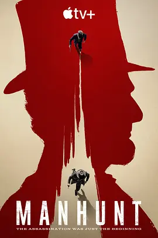

6.1
追捕刺客
Manhunt
2024
美国
评分 6.1
导演:
卡尔·弗兰克林 / 约翰·达尔 / 埃娃·瑟尔海于格
演员:
托比亚斯·门基斯 / 安东尼·鲍伊 / 拉维·西蒙尼 / 威尔·哈里森 / 布兰登·弗林
类型:
剧情,惊悚
剧情简介
故事发生在美国历史最动荡的时刻。林肯遇刺后，国家陷入震荡，街道上弥漫着难以安放的愤怒与恐惧。联邦政府迅速展开调查，一支由情报官员、军方人员与地方执法者组成的追捕小组被推至风暴中心。他们在相互猜疑、政治压力与复杂线索中穿行，试图在混乱的局势里拼凑真相。调查越深入，他们越能感受到潜伏在暗处的力量。证词互相矛盾，情报不断被篡改，关键人物潜逃或神秘失踪，仿佛有人在刻意拖延这一切。追捕行动从城市街巷延伸至偏远乡野，从官僚体系蔓延至秘密社团，每一步都伴随更强烈的危险。随着时间流逝，公众情绪愈发紧绷，任何错误判断都可能引发更严重的动荡。在这重压下，办案团队的成员被迫直面自身的信念与恐惧。有的人坚持真相高于一切，有的人在政治与职责之间摇摆，也有人在残酷现实面前逐渐失去坚持。历史事件的余震在剧中以更具张力的方式展开，人物的抉择、行为与情绪交织成一张不断收紧的网，使每一集都带着压迫感和无法逃离的紧张。该剧以历史背景为基底，却以惊悚节奏推进，使观众在追随线索、注视人物命运的过程中始终保持高度沉浸。